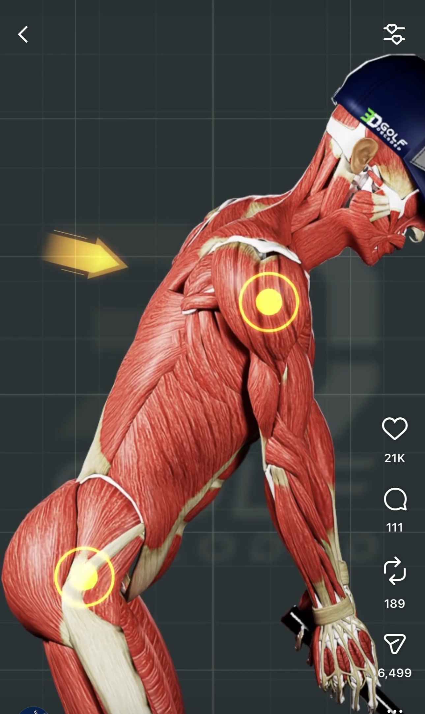
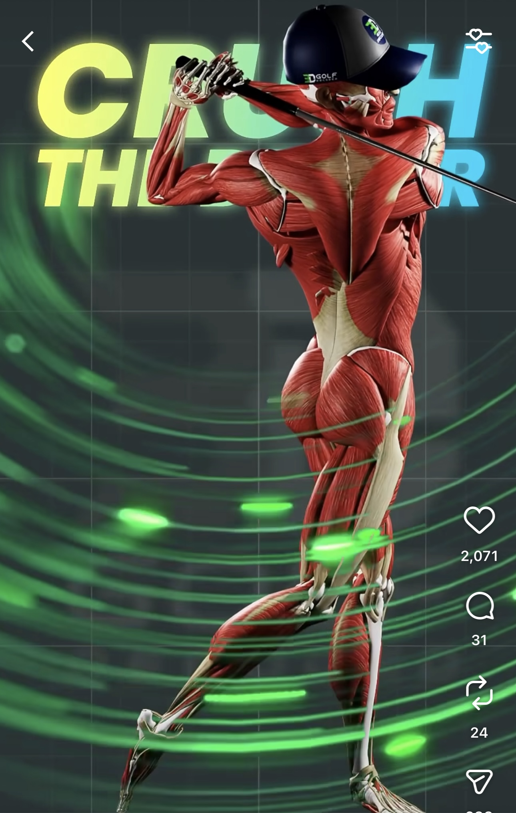
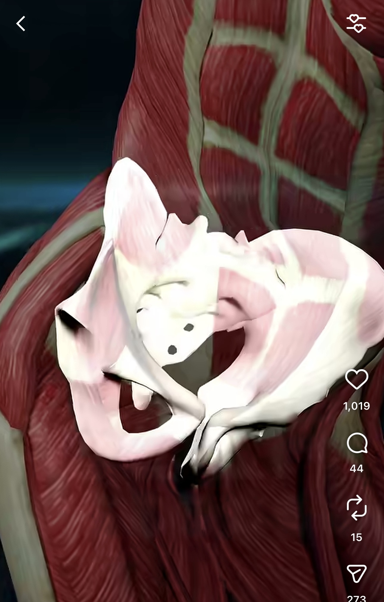

3D Golf Decoded 研究¶
研究日期: 2025-01-07 | 类型: 竞品/案例研究
基本信息¶
| 项目 | 内容 |
|---|---|
| 名称 | 3D Golf Decoded |
| 网站 | 3dgolfdecoded.com |
| @3dgolfdecoded | |
| 关联机构 | DB Golf Center (新加坡) |
| 官网 | dbgolfcenter.com |
| 地址 | 6 Tampines Street 92, #01-03, Singapore 528893 |
| 创始人 | Davide Bertoli (@db.golfcoach / @dbprogolf) |
1. 背景信息¶
1.1 定位¶
高尔夫培训机构 + 教练认证课程（非软件公司）
- DB Golf Center: 新加坡室内高尔夫培训中心
- 3D Golf Decoded: 面向教练的 3D 生物力学认证课程
- 理念: "We don't guess, we measure"
创始人: Davide Bertoli - Elite Golf Coach, Swing Catalyst Ambassador, Cobra & Puma Ambassador
1.2 技术设备¶
| 设备 | 用途 |
|---|---|
| Swing Catalyst | 挥杆分析 + 压力板 |
| Foresight | 发球监测器 |
| 3D PuttView | AR 推杆绿分析 |
| Capto System | 推杆动作分析 |
1.3 课程体系¶
| 级别 | 名称 | 形式 |
|---|---|---|
| 基础 | Foundation | 线上 + 线下 |
| 高级 | Master | 线上 + 线下 |
对比 TPI: TPI Level 1/2 各 $1,095，3D Golf Decoded 价格未公开。
1.4 服务与定价¶
| 服务 | 价格 |
|---|---|
| 室内模拟器 | SGD 15 起 |
| 90分钟挥杆评估 | 未公开 |
| 1对1教练 | 未公开 |
1.5 商业模式¶
收入来源：
├── 培训中心 (DB Golf Center): 场地租赁、1对1教练、大师班
├── 认证课程 (3D Golf Decoded): Foundation/Master 课程
└── 品牌合作: Swing Catalyst/Cobra/Puma Ambassador
2. Instagram 3D 动画分析（重点）¶
2.1 两种动画类型¶
Instagram 上有两种类型的 3D 动画内容：
2.1.1 肌肉人体动画（主要内容）¶
带肌肉纹理的 3D 人体模型动画，展示挥杆时的肌肉解剖结构。
| 项目 | 说明 |
|---|---|
| 模型来源 | 购买的 3D 解剖人体模型（Zygote Body、TurboSquid、DAZ 3D） |
| 制作工具 | Blender、Maya、Cinema 4D |
| 动作来源 | 手动关键帧动画 或 动捕数据导入 |
| 后期制作 | 添加文字标注、角度指示线、特效 |
工作流程:
┌─────────────────────────────────────────────────────────────────┐
│ 1. 准备素材 │
│ └── 购买/下载带肌肉纹理的 3D 人体解剖模型 │
│ │
│ 2. 动画制作 │
│ ├── 在 3D 软件中绑定骨骼（Rigging） │
│ ├── 制作挥杆关键帧动画 或 导入动捕数据 │
│ └── 调整相机视角和渲染设置 │
│ │
│ 3. 后期合成 │
│ ├── 添加角度标注、运动轨迹线 │
│ ├── 添加文字说明（如 "Trail Hip Control"） │
│ └── 导出视频用于社交媒体 │
└─────────────────────────────────────────────────────────────────┘
重要说明:
- 肌肉只是视觉效果，不是实时采集的肌电数据
- 这是通用教学动画，不是针对具体球员的个性化分析
- 用途是展示"挥杆时哪些肌肉参与"的概念
2.1.2 骨骼分析动画（辅助内容）¶
部分内容可能使用 Sportsbox AI 生成简化骨骼动画。
| 项目 | 说明 |
|---|---|
| 输入 | 单个 2D 慢动作视频（手机拍摄） |
| 技术 | Kinematic AI（深度学习姿态估计 + 3D 重建） |
| 输出 | 简化骨骼模型（火柴人风格），6 个视角 |
| 定价 | $799/年（教练版） |
两种动画对比¶
| 对比项 | 肌肉人体动画 | Sportsbox 骨骼动画 |
|---|---|---|
| 视觉效果 | 高端、专业 | 简洁、技术感 |
| 制作成本 | 高（需 3D 建模技能） | 低（手机拍摄即可） |
| 个性化 | 通用动画 | 可分析具体球员 |
| 数据价值 | 纯演示 | 可提取生物力学数据 |
| 用途 | 营销、教学概念 | 实际挥杆分析 |
2.2 界面设计核心特点¶
2.2.1 3D 立体呈现¶
3D 呈现让抽象的生物力学概念变得可触可感。
 |
 |  |
 |
2.2.2 丝滑动画展示¶
动画播放流畅丝滑，配合讲解节奏调整速度。关键动作点会暂停或慢放，配合文字和语音讲解，让学习者理解要点。重点标注在暂停时出现，用箭头、圆圈、高亮等方式指向需要关注的部位。视图切换在讲解过程中自然过渡，从正面切到侧面，或从全身切到局部放大。重影（Ghost/Onion Skin）设计保留前几帧的半透明残影，在单帧画面中展示动作的连续变化轨迹。整体观感像一个精心制作的教学视频，而不是枯燥的数据展示。
 |
 |
 |
 |
 |
2.2.3 肌肉与骨骼叠加显示¶
界面同时展示肌肉层和骨骼层，两者可以叠加或单独展示。骨骼层展示关节角度、旋转轴心、运动轨迹等几何信息。肌肉层展示哪些肌肉群在发力、肌肉的拉伸和收缩状态。这种双层设计帮助学习者理解"骨骼怎么动"和"肌肉怎么配合"的关系。每个动作要点都可以在对应的肌肉或骨骼上标注指标，比如髋部旋转角度标注在骨盆上，核心发力标注在腹肌群上。
 |
 |
 |
2.2.4 实时对比¶
动画采用左右分屏或叠加对比的方式，多个画面同步播放，让学习者更容易理解动作细节。
对错对比：左边是正确动作，右边是常见错误，学习者可以清晰看到两者的差异。
例如展示"早伸展（Early Extension）"时，左边髋部保持稳定，右边髋部前冲，下杆过程中差距逐渐拉开。
角度对比：同一个动作从正面、侧面、俯视等不同角度同时展示。
例如髋部旋转，正面看是重心转移，侧面看是前后移动，俯视才能看清旋转幅度。
画面对比：肌肉视图和骨骼视图并排显示，或者全身视图和局部放大同时展示。
这些对比都是动态的、实时的，每一帧都能看到差异，比静态截图更直观。
2.2.5 指标半透明设计¶
动画中的各种标注和指标采用半透明设计，不遮挡人体动作本身。
重力线、力线、旋转线、角度标注等都是半透明的，既能看到指标信息，又能看清背后的肌肉和骨骼。
文字标签和数值显示也采用半透明背景，确保信息清晰但不喧宾夺主。
这种设计让界面信息丰富但不杂乱，学习者可以同时关注动作和数据。
2.2.6 重力线、力线、旋转线与平衡参考¶
重力线显示身体重心相对于双脚支撑面的位置，帮助判断平衡状态。
挥杆过程中重力线会随重心转移而移动，理想状态是始终保持在支撑范围内。
力线（Force Line）显示地面反作用力的方向和大小。
力线从脚底向上延伸，展示力量如何从地面传递到身体各部位。
旋转线标注髋部和肩部的旋转轴心和旋转方向。
通过旋转线可以清晰看到肩髋分离角（X-Factor），以及下杆时髋部如何领先肩部旋转。
角度标注在关键部位显示具体数值，如髋部旋转角度、肩部旋转角度、脊柱前倾角等。
角度标注通常用弧线或圆圈表示，配合数字显示，让学习者有明确的量化目标。
这些线条和标注让学习者直观理解"重心转移"、"地面反作用力"、"旋转发力"和"动作幅度"这些抽象概念。
2.2.7 发力效果展示¶
动画通过视觉特效展示肌肉发力的强度和时机。
发力的肌肉群会高亮显示，颜色变化表示激活程度，越亮表示发力越大。
有些动画还会用脉冲效果或光晕效果来强调发力的瞬间。
例如下杆时，先是臀肌和核心高亮，然后是躯干旋转肌群，最后是手臂和手腕，清晰展示 Kinematic Sequence（动力链顺序）。
这种发力可视化让学习者理解"什么时候该发力"和"用哪里发力"。
2.3 可视化元素清单¶
他们的动画界面有很强的教学直观性：
| 可视化元素 | 说明 | 对学习者的价值 |
|---|---|---|
| 肌肉高亮 | 不同颜色标记参与的肌肉群 | 理解"该用哪些肌肉发力" |
| 角度标注圆 | 紫色圆圈标注髋部/肩部旋转角度 | 量化动作幅度，有具体目标 |
| 运动轨迹线 | 彩虹色轨迹线显示球/杆头路径 | 理解 Draw/Fade 的区别 |
| 对比视图 | 左右对比（正确 vs 错误） | 直观看到差异在哪 |
| 骨骼叠加 | 肌肉 + 骨骼线条同时显示 | 理解骨骼如何驱动肌肉 |
| 文字标签 | 大字标题如 "Trail Hip Control" | 快速理解动作要点 |
| 数值显示 | 角度、速度等具体数字 | 量化反馈，可追踪进步 |
2.4 教学主题和指标¶
从 Instagram 内容中观察到的教学主题：
动作要点类:
| 主题 | 英文 | 教学意义 |
|---|---|---|
| 后髋控制 | Trail Hip Control | 下杆时后侧髋部的旋转控制 |
| 杆面控制 | Square Face / Open Face | 触球时杆面角度影响球路 |
| 杆身前倾 | Shaft Lean | 触球时杆身向目标倾斜程度 |
| 反弹激活 | Activate the Bounce | 沙坑/切球时的杆底角使用 |
| 球路控制 | Fades / Draws | 左曲球 vs 右曲球的动作区别 |
生物力学指标类:
| 指标 | 说明 | 典型值 |
|---|---|---|
| X-Factor | 肩髋分离角（上身-下身旋转差） | 顶点约 45°-60° |
| X-Factor Stretch | 下杆初期肩髋分离角的增加 | 比顶点多 10°-15° |
| 髋部旋转 | 骨盆相对目标线的旋转角度 | 顶点约 45°（闭合） |
| 肩部旋转 | 肩线相对目标线的旋转角度 | 顶点约 90°-100° |
| Kinematic Sequence | 下杆发力顺序：髋→躯干→手臂→杆头 | 峰值速度依次出现 |
| O-Factor | 骨盆倾斜角（侧倾） | 影响触球稳定性 |
| S-Factor | 肩部倾斜角（侧倾） | 影响挥杆平面 |
3. 对 Movement Chain AI 的启示¶
3.1 界面设计启示¶
| 他们做得好的 | 我们可以借鉴/超越 |
|---|---|
| 肌肉可视化直观 | 结合 sEMG 实时数据，显示真实肌肉激活 |
| 角度标注清晰 | 用 IMU 数据提供更精确的实时角度 |
| 对比视图 | 提供 与职业选手/个人最佳 的叠加对比 |
| 文字标签醒目 | 用 语音反馈 实时播报，不需要看屏幕 |
| 通用教学动画 | 个性化 Avatar 基于用户体型生成 |
3.2 差异化机会¶
| 他们 | 我们 |
|---|---|
| 使用现成工具 | 自研软件 |
| 需要专业设备 | 手机 + 可穿戴 |
| 固定场地 | 随时随地 |
| 需要教练解读 | AI 自动分析 |
| 高价专业服务 | 大众化定价 |
| 肌肉只是视觉效果 | sEMG 真实肌肉数据 |
| 事后分析 | 实时反馈 |
3.3 关键洞察¶
- 市场验证: 3D 生物力学分析在高尔夫教练市场有真实需求
- 价格空间: 专业服务定价较高，存在降维打击空间
- 内容策略: 3D 动画是极佳的营销素材
- 认证模式: B2B 教练认证是可行的商业模式
- 可视化价值: 直观的界面对学习者有很大帮助，值得重点投入